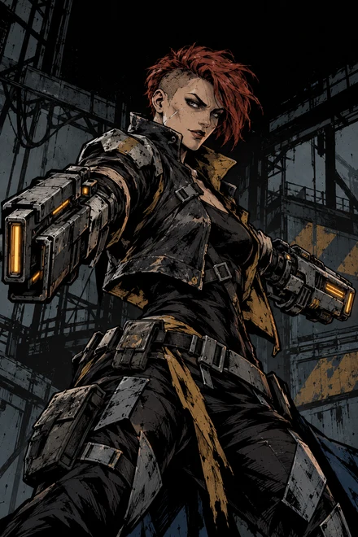
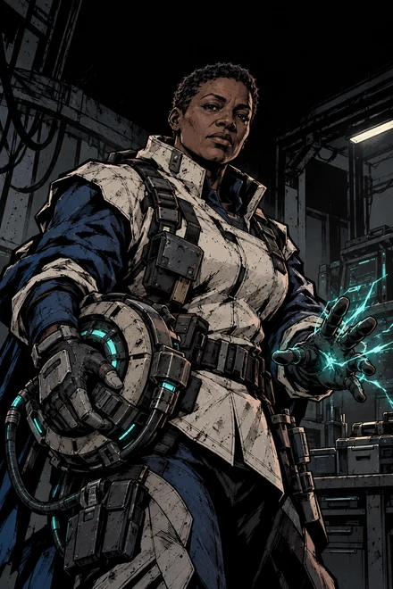

REAPER / 夺魄
把一次命中，变成斩杀。
攻击 8 生命 22
掠魂在攻击阶段启用。普攻命中时直接使目标阵亡；被格挡则失效，并进入 5 回合冷却。
这会怎样影响决策？
高生命目标也面临斩杀威胁，防守方会更重视格挡方向。攻击方则需要权衡现在发动，还是保留机会等待对手判断失误。
CHEN HUA / ROBLOX STRATEGY GAME
先攻
你知道对手的阵容，
却不知道他下一步会选谁。
围绕隐藏意图的双人回合制策略对决。选出五名行动者，秘密锁定能核，再用攻击、格挡与角色能力争夺主动权。
电脑端 · 需要 Roblox 账号与客户端 · 当前为好友试玩

01 / HIDDEN INTENT
阵容、生命和冷却是公开信息。未揭示的能核、攻击目标与命线目标则保留在各自一侧。判断建立在已有线索上。

双方交替选人，不能选择已入队的角色。治疗、斩杀、反伤与持续消耗会形成不同的阵容取向。
游戏首页 / 实机截图
CORE RELATION
箭头表示克制。双方同时暗选；能核相同则重新选择。取得先攻后，后攻方仍有自己的行动。
02 / OPERATOR DESIGN
角色并不只有伤害数值的区别。技能窗口、冷却、目标条件和存活约束，让选择攻击谁、保护谁，都有不同的后果。
REAPER / 夺魄
攻击 8 生命 22
掠魂在攻击阶段启用。普攻命中时直接使目标阵亡；被格挡则失效，并进入 5 回合冷却。
高生命目标也面临斩杀威胁，防守方会更重视格挡方向。攻击方则需要权衡现在发动，还是保留机会等待对手判断失误。

TWINRAIL / 双轨
攻击 7 生命 22
裂轨射击攻击两名不同的存活敌人。对方只能选择一人格挡；敌方只剩一人时，技能无法启用。冷却 2 回合。
技能价值取决于敌方剩余阵容。前期可分散压力，后期目标减少时优势消失；被动减伤和反伤仍会影响实际结算。

MENDER / 复苏
攻击 4 生命 23
修复脉冲回复所有己方存活角色 3 点生命，不超过上限。冷却 3 回合；已经阵亡的角色无法被治疗。
受伤人数影响一次治疗的总收益。提前治疗可能浪费溢出量，等待又可能失去队友，需要结合对方的爆发能力判断时机。
以上为游戏内使用的角色插画，采用 AI 辅助制作。完整十二位角色可在游戏档案中查看。
03 / FROM PROTOTYPE TO GAME
项目从已验证的网页玩法出发。先审查状态、数值、技能与胜负条件，再迁移到 Roblox；核心规则保持一致，重做操作界面与整体表现。
3D 战略桌提供空间氛围；操作与角色状态放在屏幕界面，避免桌面文字和人物卡重复叠加。角色图、技能大图和战斗日志保持一致的身份标识。
技能大图、命中数字、血条变化与死亡破碎由结算事件驱动。强攻击使用更重的反馈；减少动画模式保留信息，收起位移与碎片。

分别记录伤害、治疗、格挡和处决，通过回合与事件日志还原关键行动。玩家能回看死亡连锁，也能判断一次格挡究竟改变了什么。
服务器验证行动并计算结果；客户端只接收自己能看到的局面。AI 同样从公开信息决策，避免读取尚未揭示的对手选择。
MY WORK
玩法与数值审查、角色能力呈现、系统与新手引导设计、Luau 实现、界面与镜头音效迭代、开发测试及 Roblox 上传。制作中使用 AI 辅助代码与角色图像，最终通过实机检查调整。
游戏已上传到 Roblox，当前开放电脑端好友试玩，包含 AI 对局、同服 PvP、中英双语、角色档案、对局日志、战报，以及经验、核晶、段位、成就和外观档案。
开发阶段完成两局双客户端对战与再战回归。已有玩家反馈正式服可正常游玩；双真实账号完整对战及正式服存档重进仍需独立验收。截图为真实 Studio 游戏画面，页面不展示运营人数、收入或留存指标。
YOUR NEXT MOVE
先了解角色，再从一次格挡开始读懂对手。
如果尚无试玩权限，也可以通过本页实机画面了解游戏。